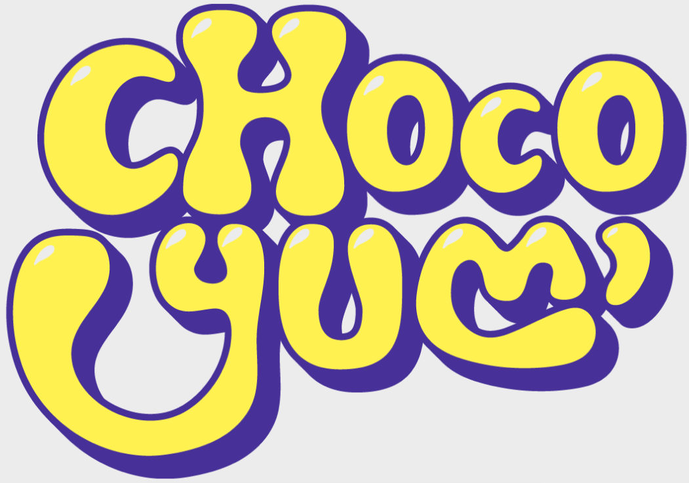
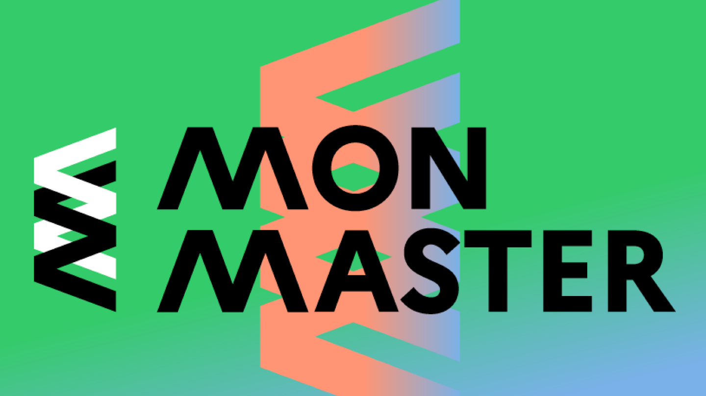

Mes Projets

OlymPeak
Plateforme de data storytelling dédiée aux Jeux Olympiques rendant les données accessibles et interactives.
Développement
Scène 3D A-Frame
Scène immersive nocturne avec éclairage dynamique et génération procédurale de trafic routier.
Développement
Blackened Corvus
Rebranding complet, clip vidéo et stratégie de communication pour un groupe de métal mélodique.
Communication
Site Accessibilité
Analyse de données eye-tracking et conception d'une interface adaptée aux utilisateurs autistes (WCAG).
Développement
Sportivea
Plateforme collaborative d'agenda sportif réalisée en 48h (Node.js/Express).
Développement
Stage SNCF
Développement d'outils internes au Technicentre des Ardoines et immersion en direction digitale.
Divers
ChocoYum'
Identité visuelle ludique (logo et packaging) pour une marque de chocolat artisanale.
Design
Candidature Master
Vidéo de présentation créative style TikTok pour le Master CED de l'Université de Tours.
Communication
Projets Divers
Sélection de travaux académiques et personnels réalisés durant mon BUT MMI.
Divers